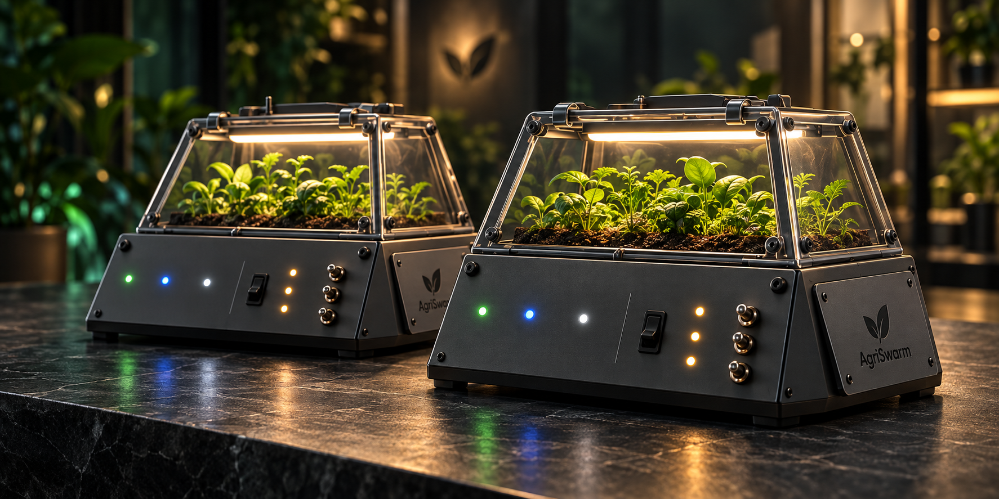
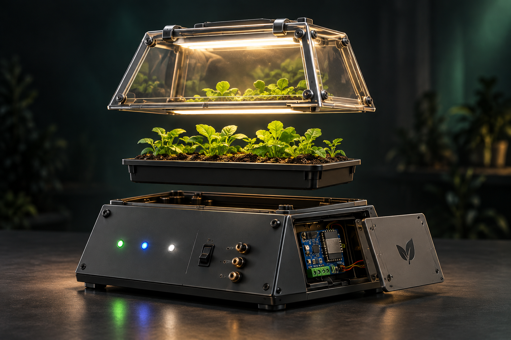
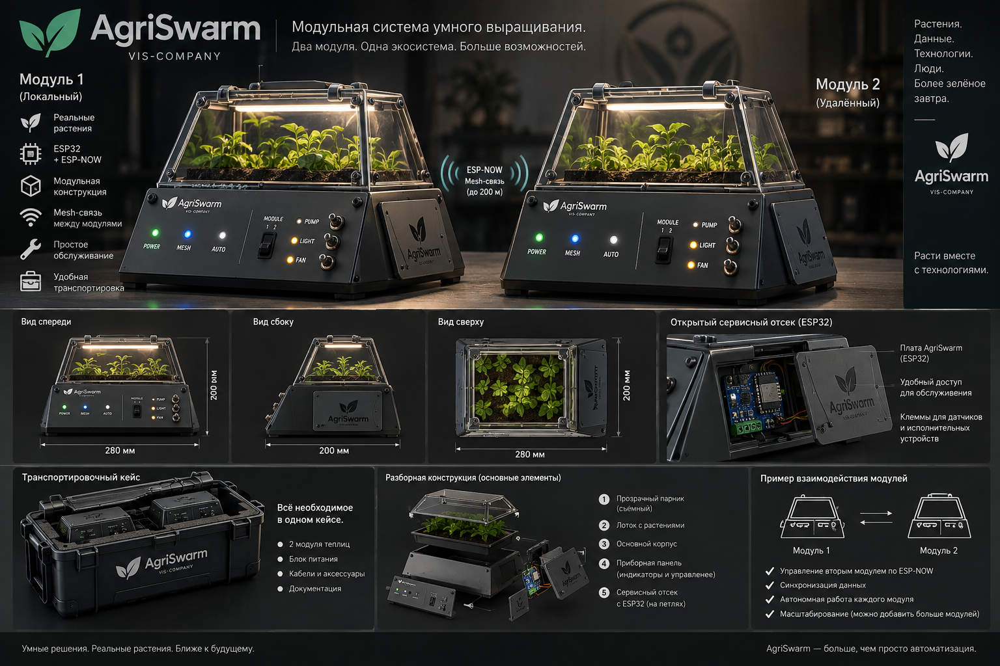

Живые растения
Прозрачный объём помогает связать показания с реальной средой: светом, влажностью и температурой.

DESIGN STUDY / 01 ОКТЯБРЯ 2026
Настраиваемая автоматика, которую можно увидеть в действии. Мы проектируем два мини-парника: каждый со своей платой, датчиками и реакцией на условия.
ДИЗАЙН-КОНЦЕПЦИЯ · ПРОТОТИП ПРОЕКТИРУЕТСЯ
ЗАМЫСЕЛ
Один корпус объясняет локальное управление. Второй позволяет показать независимые настройки и взаимодействие узлов.
Прозрачный объём помогает связать показания с реальной средой: светом, влажностью и температурой.
В концепции предусмотрены индикаторы и органы управления. Их окончательное назначение определится при сборке и проверке.
Сервисный отсек должен позволять подключать датчики и обслуживать плату без разборки всей теплицы.
ИССЛЕДУЙТЕ КОНСТРУКЦИЮ
Выберите точку на изображении или деталь в списке. Рендер показывает направление проектирования, а не монтажную схему.

КОНЦЕПТ РАЗБОРНОГО МОДУЛЯ
Съёмная крышка даёт доступ к растениям и позволяет наблюдать за ними. Материал, вентиляция и механизм открытия ещё проектируются.
ИСХОДНЫЙ КОНЦЕПТ
Дизайн-борд владельца проекта: виды корпуса, сервисный отсек и идея транспортировочного кейса.

ЧТО ПОКА ОТКРЫТО
Красивый рендер помогает обсудить идею. Рабочий прототип потребует решений по питанию, механике и обслуживанию.
Уточнить материалы, габариты, крепления и движение форточек. Проверить доступ к растениям и проводке.
Подобрать питание и ключи для нагрузок. Определить безопасное состояние индикаторов, реле и сервоприводов.
Проверить один локальный сценарий, затем обмен двух плат. Зафиксировать наблюдаемый результат и условия опыта.